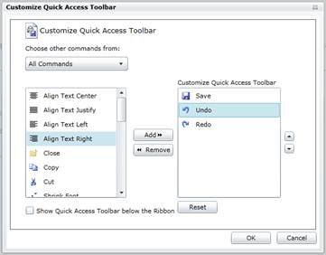

Ribbon Command manager allows the user to register their custom commands. Those commands will be shown in QAT Customization Dialog. End-users can pick the commands and add them to QAT.
The following code describes the implementation:
|
C#
RibbonCommandManager.Register(Bold, new RibbonCommandProvider("Font Commands", "Bold", "Bold16.png", "Make the selected text bold."));
RibbonCommandManager.Register(Italic, new RibbonCommandProvider("Font Commands", "Italic", "Italic16.png", "Italicize the selected text."));
RibbonCommandManager.Register(new RibbonCommand(param => OnAlignCenterExecute()), new RibbonCommandProvider("Font Commands", "Subscript", "Subscript16.png","Create small letters below the text baseline."));
RibbonCommandManager.Register(new RibbonCommand(param => OnAlignCenterExecute()), new RibbonCommandProvider("Font Commands", "Superscript", "Superscript16.png","Create small letters above the line of text."));
RibbonCommandManager.Register(Underline, new RibbonCommandProvider("Font Commands", "Underline", "Underline16.png", "Underline the selected text."));
RibbonCommandManager.Register(new RibbonCommand(param => OnAlignCenterExecute()), new RibbonCommandProvider("Editing Commands", "Undo", Undo16.png")); |
The Customization dialog will show the commands under the Group Name:

Figure 639: Customization Window
Using this window, the end user can add commands to the QAT.
 Note: Using Ribbon Command Manager static
class, ‘n’ number of User defined commands can be registered into Ribbon Command
Manger.
Note: Using Ribbon Command Manager static
class, ‘n’ number of User defined commands can be registered into Ribbon Command
Manger.